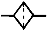
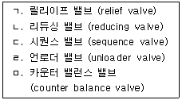

굴삭기운전기능사 (2004-02-01 기출문제)
1. 기관에서 피스톤의 행정이란?
- 상사점과 하사점과의 길이
- 피스톤의 길이
- 상사점과 하사점과의 총면적
- 실린더 벽의 상하 길이
(정답률: 79%)

2. 실린더헤드 가스켓이 손상되었을 때 일어나는 현상은?
- 피스톤이 가벼워진다.
- 엔진 오일의 압력이 높아진다.
- 압축압력과 폭발압력이 낮아진다.
- 피스톤링의 작용이 좋아진다.
(정답률: 79%)
3. 디젤기관에서 시동이 되지 않는 원인으로 가장 알맞은 것은?
- 연료공급 펌프의 연료공급 압력이 높다.
- 디젤 연료의 착화점이 낮다.
- 시동시 크랭크축 회전속도가 너무 느리다.
- 가속 페달을 깊숙히 밟고 시동하였다.
(정답률: 44%)
4. 디젤기관의 시동을 용이하게 하기위한 방법이 아닌 것은?
- 압축비를 높인다.
- 예열플러그를 충분히 가열한다.
- 흡기온도를 상승시킨다.
- 시동시 회전속도를 낮춘다.
(정답률: 69%)
5. 디젤기관에서 고속회전이 원활하지 못한 원인을 나열한 것이다. 틀린 것은?
- 연료의 압송 불량
- 축전지의 불량
- 거버너 작용 불량
- 분사시기 조정 불량
(정답률: 56%)
6. 작업 후 탱크에 연료를 가득 채워주는 이유가 아닌 것은?
- 연료의 기포방지를 위해서
- 내일의 작업을 위해서
- 연료탱크에 수분이 생기는 것을 방지하기 위해서
- 연료의 압력을 높이기 위해서
(정답률: 68%)
7. 다음 중 팬밸트와 연결되지 않은 것은?
- 발전기 풀리
- 기관 오일펌프 풀리
- 워터펌프 풀리
- 크랭크축 풀리
(정답률: 38%)
8. 냉각수 순환용 물펌프가 고장났을 때, 기관에 나타날 수 있는 현상으로 가장 중요한 것은?
- 시동 불능
- 축전지의 비중 저하
- 발전기 작동 불능
- 기관 과열
(정답률: 81%)
9. 윤활유 공급펌프에서 공급된 윤활유 전부가 엔진오일필터를 거쳐 윤활부로 가는 방식은?
- 분류식
- 자력식
- 샨트식
- 전류식
(정답률: 54%)
10. 기관의 오일 압력계 수치가 낮은 경우와 관계없는 것은?
- 오일 릴리프 밸브가 막혔다.
- 크랭크축 오일 틈새가 크다.
- 크랭크 케이스에 오일이 적다.
- 오일펌프가 불량하다.
(정답률: 49%)
11. 연소에 필요한 공기를 실린더로 흡입할 때, 먼지 등의 불순물을 여과하여 피스톤 등의 마모를 방지하는 역할을 하는 장치는?
- 과급기(super charger)
- 에어 클리너(air cleaner)
- 냉각장치(cooling system)
- 플라이휠(fly wheel)
(정답률: 80%)
12. 교류발전기에서 교류를 직류로 바꾸어 주는 것은?
- 계자
- 슬립링
- 다이오드
- 브러시
(정답률: 74%)
13. AC 발전기의 출력은 무엇을 변화시켜 조정하는가?
- 발전기의 회전속도
- 축전지 전압
- 로터 전류
- 스테이터 전류
(정답률: 36%)
14. 방향지시등의 한쪽 등 점멸이 빠르게 작동하고 있을 때, 가장 먼저 점검하여야 할 곳은?
- 배터리
- 플래셔 유닛
- 콤비네이션 스위치
- 전구(램프)
(정답률: 60%)
15. 예열 장치의 고장 원인이 아닌 것은?
- 접지가 불량하면 전류의 흐름이 적어 발열이 충분하지 못하다.
- 규정 이상의 전류가 흐르면 단선된다.
- 가열 시간이 너무 길면 자체 발열에 의해 단선된다.
- 예열릴레이가 회로를 차단하면 예열플러그가 단선된다.
(정답률: 44%)
16. 다음 중 축전지의 비중을 측정하는 계기는?
- 온도계
- 비중계
- 점도계
- 습도계
(정답률: 82%)
17. 축전지 터미널의 식별 방법이 아닌 것은?
- 문자(P, N)로 분별
- 요철로 분별
- 굵기로 분별
- 부호(+, -)로 식별
(정답률: 59%)
18. 무한궤도식 굴삭기의 주행 방법 중 틀린 것은?
- 연약한 땅을 피해서 간다.
- 돌이 주행모터에 부딪치지 않도록 한다.
- 요철이 심한 곳에서는 엔진 회전수를 높여 통과한다.
- 가능하면 평탄한 길을 택하여 주행한다.
(정답률: 76%)
19. 굴삭기 동력전달 계통에서 최종적으로 구동력 증가를 하는 것은?
- 트랙 모터
- 스프로켓
- 종감속 기어
- 동력 인출 장치
(정답률: 46%)
20. 지게차의 전경각과 후경각은 조종사가 적절하게 선정하여 작업을 하여야 하는데 이를 조정하는 레버는?
- 전후진 레버
- 리프트 레버
- 틸트 레버
- 변속 레버
(정답률: 65%)
21. 지게차의 일반적인 조향방식은?
- 앞바퀴 조향방식이다.
- 허리꺾기 조향방식이다.
- 작업조건에 따라 바꿀 수 있다.
- 뒷바퀴 조향방식이다.
(정답률: 72%)
22. 기중기에 대한 다음 설명 중 옳은 것은?
- 붐의 각과 기중 능력은 반비례한다.
- 붐의 길이와 운전 반경은 반비례한다.
- 상부 회전체의 최대 회전각은 270° 이다.
- 마스터 클러치가 연결되면 케이블 드럼에 축이 제일 먼저 회전한다.
(정답률: 37%)
23. 모터 그레이더의 탠덤 드라이브 장치에 대한 설명 중 틀린 것은?
- 그레이더의 균형을 유지해 준다.
- 최종 감속 작용을 한다.
- 그레이더의 차체가 안정된다.
- 회전반경을 작게하는 역할을 한다.
(정답률: 48%)
24. 클러치 용량에 대한 설명으로 틀린 것은?
- 엔진 회전력의 약 2∼3배 정도 커야 한다.
- 용량이 너무 크면 연결시 엔진이 정지하기 쉽다.
- 용량이 너무 적으면 클러치가 미끄러진다.
- 엔진 회전력보다 용량이 적어야 한다.
(정답률: 51%)
25. 기계식 조향 장치에서 조향 기어의 구성품이 아닌 것은?
- 웜 기어
- 섹터 기어
- 조정 스크류
- 하이포이드 기어
(정답률: 44%)
26. 건설기계 운전 중 점검사항이 아닌 것은?
- 라디에이터 냉각수량 점검
- 냉각수온도 게이지 점검
- 경고등 점멸 여부
- 주행속도계 점검
(정답률: 64%)
27. 건설기계 등록 신청은 누구에게 하는가?
- 건교부 장관
- 경찰서장
- 시·도지사
- 행정자치부장관
(정답률: 82%)
28. 일시정지를 하지 않고도 철길건널목을 통과할 수 있는 경우는?
- 신호등이 진행신호 표시일 때
- 차단기가 올려져 있을 때
- 경보기가 울리지 않을 때
- 앞차가 진행하고 있을 때
(정답률: 77%)
29. 서행에 대한 설명으로 옳은 것은?
- 매시 15km이내의 속도를 말한다.
- 매시 20km 이내로 주행하는 것을 말한다.
- 정지거리 2m 이내에서 정지할 수 있는 경우를 말한다.
- 위험을 느끼고 즉시 정지할 수 있는 느린 속도로 운행하는 것을 말한다.
(정답률: 74%)
30. 노면 표시의 중앙선에 대한 설명으로 옳은 것은?
- 백색의 실선 및 점선으로 되어 있다.
- 황색 및 백색의 실선 및 점선으로 되어 있다.
- 황색의 실선 및 점선으로 되어 있다.
- 백색 및 회색의 실선 및 점선으로 되어 있다.
(정답률: 69%)
31. 다음 중 주차, 정차가 금지되어 있지 않은 장소는?
- 경사로의 정상부근
- 건널목
- 횡단보도
- 교차로
(정답률: 81%)
32. 교통사고가 발생하였을 때 운전자가 가장 먼저 취해야 할 조치는?
- 경찰공무원에게 신고
- 즉시 사상자를 구호하고 경찰공무원에게 신고
- 즉시 보험회사에 신고
- 즉시 피해자 가족에게 알린다.
(정답률: 82%)
33. 다음 중 건설기계사업이 아닌 것은?
- 건설기계수출업
- 건설기계대여업
- 건설기계정비업
- 건설기계폐기업
(정답률: 55%)
34. 우리나라에서 건설기계에 대한 정기검사를 실시하는 검사업무 대행기관은?
- 건설기계정비업자
- 건설기계안전관리원
- 자동차정비업자
- 건설기계폐기업자
(정답률: 59%)
35. 유압유의 취급에 대한 설명으로 틀린 것은?
- 오일의 선택은 운전자가 경험에 따라 임의선택한다.
- 먼지, 모래, 수분에 의한 오염방지 대책을 세운다.
- 유량은 알맞게 하고 부족시 보충한다.
- 오염, 노화된 오일은 교환한다.
(정답률: 80%)
36. 유압 작동부에서 오일이 누유되고 있을 때 가장 먼저 점검하여야 할 곳은?
- 피스톤
- 시일
- 기어
- 펌프
(정답률: 54%)
37. 축압기의 기호 표시는?

(정답률: 49%)
38. 플러싱 후의 처리방법으로 틀린 것은?
- 작동유 탱크 내부를 다시 청소한다.
- 잔류 플러싱 오일을 반드시 제거하여야 한다.
- 작동유 보충은 24시간 경과 후 하는 것이 좋다.
- 라인필터 엘리먼트를 교환한다.
(정답률: 53%)
39. 작동유 온도 상승시의 영향과 관계가 없는 것은?
- 열화를 촉진한다.
- 점도의 저하에 의해 누유되기 쉽다.
- 유압펌프 등의 효율은 좋아진다.
- 온도변화에 의해 유압기기가 열변형되기 쉽다.
(정답률: 67%)
40. 유압계통의 최대압력을 제어하는 밸브는?
- 오리피스밸브
- 첵 밸크
- 릴리프밸브
- 쵸크밸브
(정답률: 65%)
41. 일반적으로 건설기계의 유압펌프는 무엇에 의해 구동되는가?
- 엔진의 플라이휠에 의해 구동된다.
- 변속기 P.T.O장치에 의해 구동된다.
- 에어 컴프레셔에 의해 구동한다.
- 캠축에 의해 구동된다.
(정답률: 47%)
42. 유압모터의 특징 중 가장 좋은 것은?
- 운동량을 자동으로 직선조작을 할 수 있다.
- 넓은 범위의 변속장치를 조작할 수 있다.
- 운동량을 직선으로 속도조절이 용이하다.
- 넓은 범위의 무단변속이 용이하다.
(정답률: 52%)
43. 유압 펌프의 종류가 아닌 것은?
- 기어 펌프
- 진공 펌프
- 베인 펌프
- 피스톤 펌프
(정답률: 59%)
44. 보기 중 분기 회로에 사용되는 밸브로 가장 적합한 항은?

- ㄱ, ㄴ
- ㄴ, ㄷ
- ㄷ, ㄹ
- ㄹ, ㅁ
(정답률: 59%)
45. 일반적인 유압 실린더의 종류에 해당하지 않는 것은?
- 단동 실린더 피스톤(piston) 형
- 단동 실린더 램(ram) 형
- 단동 실린더 레이디얼(radial) 형
- 복동 실린더 양로드(double rod) 형
(정답률: 50%)
46. 유압 작동기의 입력측에 유량제어 밸브를 직렬로 연결하여 작동기로 유입되는 유량을 제어함으로써 작동기의 속도를 제어하는 회로는?
- 미터-인 회로 (meter-in circuit)
- 미터-아웃 회로 (meter-out circuit)
- 블리드-온 회로 (bleed-on circuit)
- 블리드-오프 회로 (bleed-off circuit)
(정답률: 57%)
47. 폭발의 우려가 있는 가스 또는 분진을 발생하는 장소에서 지켜야 할 일에 속하지 않는 것은?
- 불연성 재료의 사용금지
- 화기의 사용금지
- 인화성 물질 사용금지
- 점화의 원인이 될 수 있는 기계 사용금지
(정답률: 74%)
48. 소화작업에 대한 설명 중 틀린 것은?
- 가열물질의 공급을 차단시킨다.
- 유류화재시 표면에 물을 붓는다.
- 산소의 공급을 차단한다.
- 점화원을 발화점 이하의 온도로 낮춘다.
(정답률: 81%)
49. 방화 대책에 구비사항으로 가장 거리가 먼 것은?
- 방화사
- 스위치 표시
- 방화벽 및 스프링쿨러
- 소화기구
(정답률: 76%)
50. 작업시 안전사항으로 준수해야 할 사항 중 틀린 것은?
- 정전시는 반드시 스위치를 끊을 것
- 딴 볼일이 있을 때는 기기 작동을 자동으로 조정하고 자리를 비울 것
- 고장중의 기기에는 반드시 표식을 할 것
- 대형 물건을 기중 작업할 때는 서로 신호에 의거할 것
(정답률: 82%)
51. 작업효율을 위한 공구관리의 요건으로 가장 거리가 먼 것은?
- 공구는 항상 최저 보유량만 확보 할 것
- 공구는 항상 완벽한 상태로 보관하며 파손공구는 즉시 교환 할 것
- 공구의 필요수량 확보 할 것
- 사용한 공구는 항상 깨끗이 하고 잘 정돈 할 것
(정답률: 78%)
52. 다음 작업 중 보안경을 착용해야 할 작업은?
- 기관분해 조립작업
- 배전기 탈부착 작업
- 그라인더를 사용하는 작업
- 오일펌프 정비작업
(정답률: 74%)
53. 인양 물체의 중심을 측정하여 인양하여야 한다. 다음 중 잘못된 것은?
- 와이어로프나 매달기용 체인이 벗겨질 우려가 있으면 되도록 높이 인양한다.
- 인양 물체를 서서히 올려 지상 약 30cm지점에서 정지확인 한다.
- 인양 물체의 중심이 높으면 물체가 기울 수 있다.
- 형상이 복잡한 물체의 무게 중심을 목측한다.
(정답률: 77%)
54. 운반과정에서의 주의사항 설명으로 잘못된 것은?
- 필요한 규칙과 규정을 지킨다.
- 기술적으로 들어올린다.
- 끝날 때만 주의를 하여야 한다.
- 올바른 몸의 자세를 취한다.
(정답률: 82%)
55. 가스 용접 시 사용되는 산소용 호스는 어떤 색인가?
- 적색
- 황색
- 녹색
- 청색
(정답률: 69%)
56. 지렛대 사용시 주의사항이 아닌 것은?
- 손잡이가 미끄럽지 않을 것
- 화물중량과 크기에 적합한 것
- 화물접촉면을 미끄럽게 할 것
- 둥글고 미끄러지기 쉬운 지렛대는 사용하지 말 것
(정답률: 80%)
57. 도시가스배관이 자주 손상되는 사고의 원인이 아닌 것은?
- 되메우기 부실에 의한 지반침하
- H빔 설치를 위한 지반 천공시
- 그라우팅 공사시
- 물을 차단하기 위한 토류판 설치시
(정답률: 50%)
58. 도시가스배관을 지하에 매설시 중압인 경우 배관의 표면 색상은?
- 적색
- 청색
- 황색
- 검정색
(정답률: 48%)
59. 다음은 감전재해의 대표적인 발생 형태이다. 틀린 것은?
- 누전상태의 전기기기에 인체가 접촉되는 경우
- 고압전력선에 안전거리 이상 이격한 경우
- 전기기기의 충전부와 대지 사이에 인체가 접촉되는 경우
- 전선이나 전기기기의 노출된 충전부의 양단간에 인체가 접촉되는 경우
(정답률: 66%)
60. 한전에서는 고압이상의 전선로에 대하여 안전거리를 규정하고 있다. 다음 중 154,000V의 송전선로에 대한 안전거리로서 알맞은 것은?
- 160cm
- 75cm
- 350cm
- 30cm
(정답률: 47%)